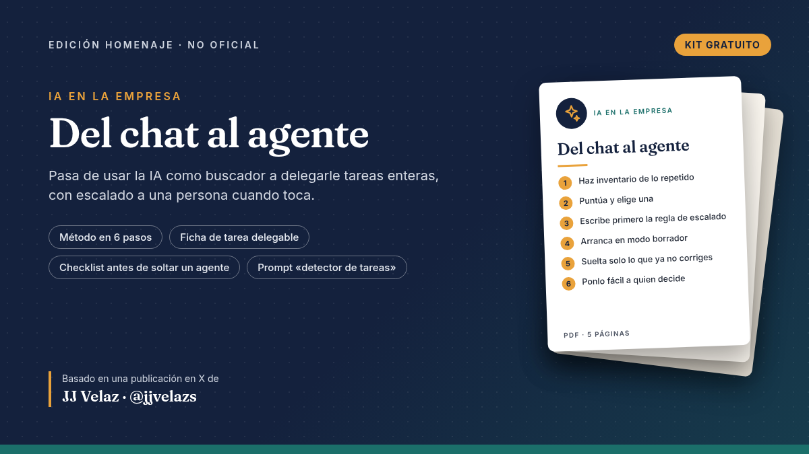

Qué incluye
- PDF (5 páginas): el camino de la fase 1 (asistente) a la fase 2 (agente) en 6 pasos
- Ficha de tarea delegable con regla de escalado a una persona
- Checklist antes de soltar un agente y ejemplo práctico (ficticio)
- Prompt «detector de tareas delegables» para tu IA
Todo el mérito es de JJ Velaz (@jjvelazs)
La idea de las dos fases de la implantación de IA en empresas —y de escalar a una persona cuando sea necesario— viene de una publicación de JJ Velaz en X. Esto es una ampliación gratuita y no oficial; todo el mérito de la idea original es suyo.
Leer la publicación original en X
Homenaje no oficial, no revisado ni respaldado por el creador. Gratis, no se vende. Los ejemplos son ficticios y no se prometen resultados.